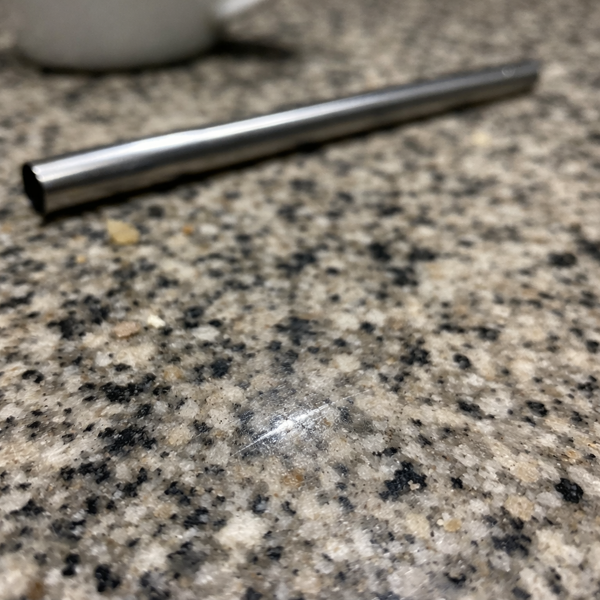
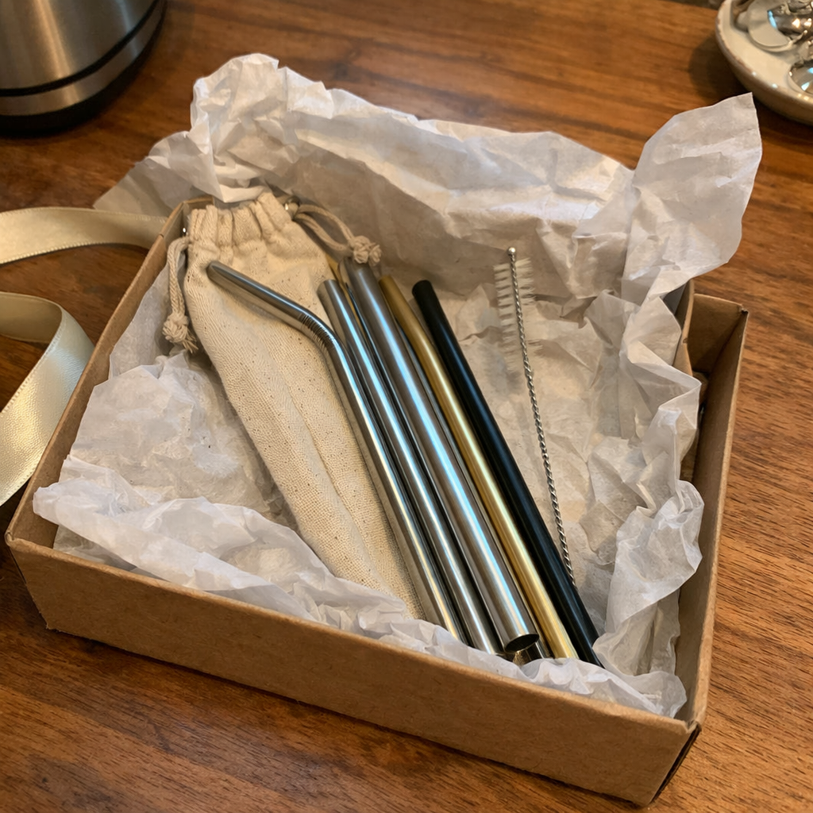
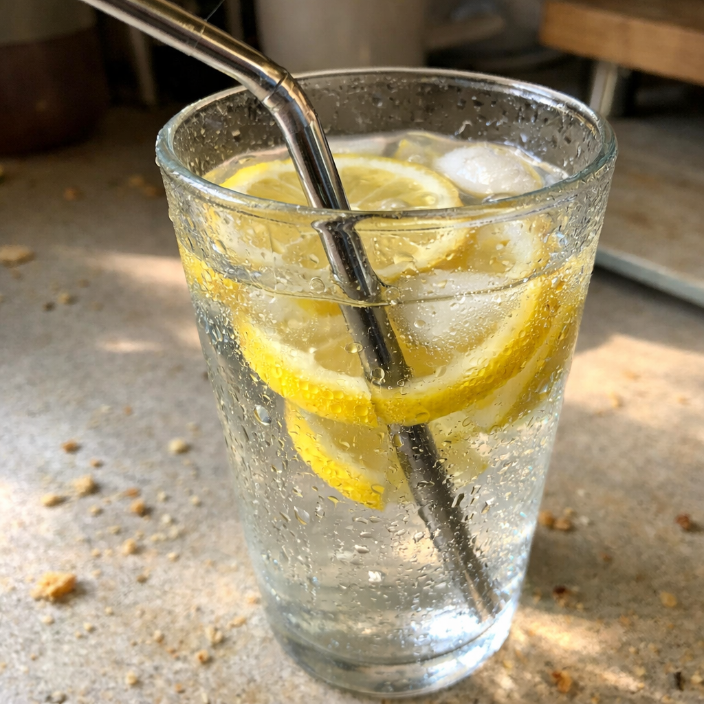
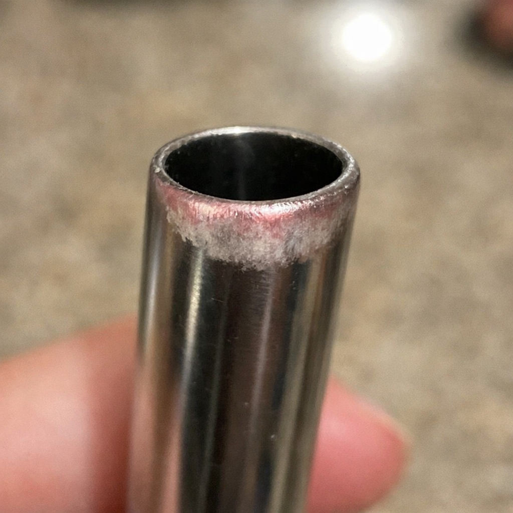
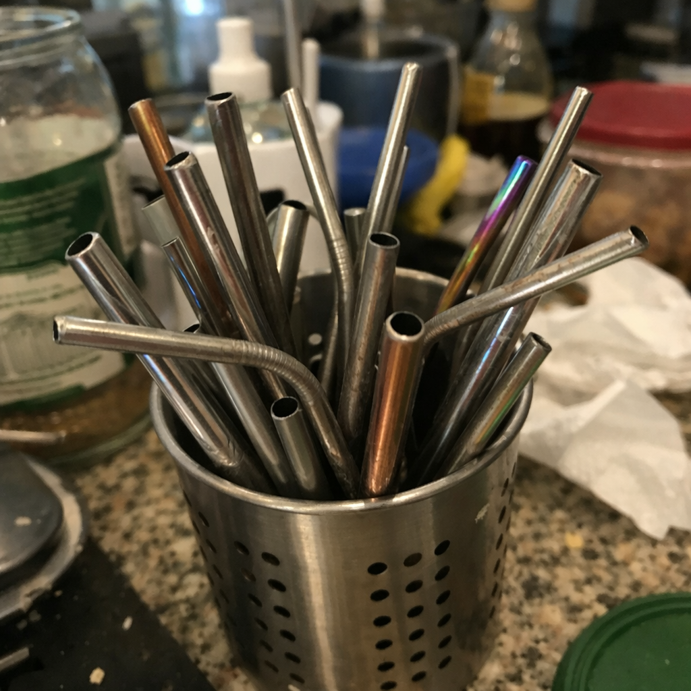

Strawesome Ad Drafts — All 20 Ads
20 belief-violation native image ads for Facebook | Leads to: "5 Reasons You Shouldn't Use Metal Straws"
Draft 1 · Flip Safety
Contradict: "Metal is safer"
S
...
Glass straws are safer than metal.
Not what you expected to hear.
You've been told the opposite your whole life.
Glass is fragile. Glass breaks. Glass is a liability.
Metal is solid. Metal is sturdy. Metal is the responsible choice.
But here's what nobody mentions:
Metal conducts heat. Burns your lips on hot coffee. Freezes them on iced drinks.
Metal harbors bacteria in seams you can't see and can't clean.
Metal chips teeth. Starbucks recalled 2.5 million metal straws after children were lacerated.
Metal leaches chromium and nickel into acidic drinks. That metallic taste isn't neutral.
In 2018, a woman in England fell while holding a jar with a metal straw.
The straw didn't bend. Didn't give.
It pierced her brain.
The coroner's warning: metal straws should not be used with lids that hold them in place.
"Unbreakable" was never the same as "safe."
The danger was never the glass.
The danger was the rigid, opaque tube you've been putting in your mouth because it "can't break."
5 reasons you shouldn't use metal straws: strawesome.com/presell
See more

strawesome.com
Glass Straws Are Safer Than Metal
What the metal straw industry won't tell you
👍 ❤️ 2.4K
Draft 2 · Attack Decision
Contradict: "I made the safe choice"
S
...
Metal straws are a dangerous choice.
Not because they're poorly made.
Because "unbreakable" was never the same as "safe."
You picked metal because it seemed solid.
Sturdy. The opposite of fragile.
That made sense.
But solid means rigid. And rigid means no give on impact.
Think about highway guardrails.
They flex when a car hits them. The guardrail bends — absorbing energy.
The car takes damage. The passengers survive.
Now imagine a concrete wall.
Same impact. Zero flex.
All the energy goes straight into the car.
Metal straws are concrete walls for your mouth.
One accidental bite. Chipped tooth.
One fall while drinking. Puncture wound.
One toddler running with a cup. The straw doesn't move.
In 2016, Starbucks recalled 2.5 million metal straws after reports of children with mouth lacerations.
In 2018, a UK coroner issued a warning after a woman died from a metal straw piercing her brain.
"Unbreakable" sounds like a feature.
Until you realize it just means something else breaks instead.
The safest materials aren't the hardest.
They're the ones that fail safely.
5 reasons you shouldn't use metal straws: strawesome.com/presell
See more

strawesome.com
Metal Straws Are a Dangerous Choice
The "safe" choice isn't what you think
👍 ❤️ 3.1K
Draft 3 · Flip Strength
Contradict: "Metal is stronger"
S
...
Glass straws are stronger than metal straws.
That sounds backwards.
You've been taught that metal is the strong choice and glass is the fragile one.
But strength isn't about surviving a single impact.
Strength is about lasting.
Metal corrodes over time.
Metal develops micro-scratches that harbor bacteria.
Metal leaches chromium and nickel into your acidic drinks — coffee, juice, smoothies.
Metal conducts temperature extremes that stress the material with every use.
That "indestructible" straw is degrading every time you drink through it.
Glass doesn't corrode.
Glass doesn't scratch.
Glass doesn't leach.
Glass doesn't conduct.
Glass stays exactly the same on day one thousand as it was on day one.
Metal straws survive drops.
Glass straws survive decades.
One is impact strength.
The other is real strength.
The kind that means you buy once and never buy again.
5 reasons you shouldn't use metal straws: strawesome.com/presell
See more
strawesome.com
Glass Straws Are Stronger Than Metal
Real strength isn't what you think
👍 ❤️ 2.7K
Draft 4 · Quit Proof (#17)
Evidence: R1 (Temperature)
S
...
You've been using metal straws for years.
You still wince when the hot coffee hits your lips.
That's not user error.
Metal conducts every degree.
Hot pan handle energy, straight into your lips.
You've adapted to this.
Sipping carefully. Waiting for drinks to cool. Bracing for the first cold sip of iced coffee in the morning.
You blamed yourself. "I should let it cool first." "I should sip slower."
But the straw is a metal rod. And metal has loosely bound electrons that transfer heat instantly.
Hot liquid makes the straw hot. Cold liquid makes it freeze against your teeth.
You weren't being careless.
You were drinking through a heat conductor.
Your reusable tumbler keeps drinks at the right temperature for hours.
Then you drink through metal and feel every degree of that temperature against your lips.
You didn't choose wrong.
You chose a material designed for forks and pans.
Not for mouth contact.
5 reasons you shouldn't use metal straws: strawesome.com/presell
See more

strawesome.com
Metal Straws Conduct Every Degree of Temperature
That's not you being sensitive. That's physics.
👍 ❤️ 2.8K
Draft 5 · Protect (#31)
Evidence: R2 (Hygiene)
S
...
Your suspicion that you can't really clean the inside was right.
You can't see through metal.
You're trusting a kitchen you've never inspected.
You weren't being paranoid.
Bacteria, biofilm, mold — all invisible in an opaque tube.
You push a tiny brush through.
Twist it a few times. Rinse. Call it clean.
You couldn't get the walls. The bends. The grooves at each end.
Research on reusable containers found bacterial levels 100,000 times higher than a bathroom doorknob.
E. coli. Salmonella. Listeria.
All thriving where light and sight can't reach.
Biofilm forms on interior surfaces.
Rinsing doesn't remove it.
The brush touches a fraction of the surface.
And you can't see what's left behind.
Your gut instinct was correct.
Cleaning isn't cleaning if you can't verify the result.
You've been trusting a system with no way to check if it works.
5 reasons you shouldn't use metal straws: strawesome.com/presell
See more

strawesome.com
You Can't Really Clean the Inside of a Metal Straw
You can't verify what you can't see.
👍 ❤️ 3.4K
Draft 6 · Attack Trade-Off (#13)
Evidence: R3 (Rigidity)
S
...
You traded breakable for unbreakable.
What you actually got was "something else breaks instead."
Starbucks recalled 2.5 million metal straws after mouth lacerations.
Metal doesn't give on impact.
Your teeth do.
One distracted sip. One sudden stop. One kid moving too fast.
Metal is rigid.
It absorbs nothing.
Teeth absorb everything.
Dentists call them "metal straw injuries."
Chipped enamel from clinks. Cuts from sharp edges.
But you chose metal because it seemed safe.
Unbreakable sounded like a feature.
But "unbreakable" just means the force goes somewhere else.
Into your mouth. Your teeth. Your gums.
A concrete wall doesn't break either.
That's not what makes it safe.
You made the reasonable choice with the information you had.
The problem wasn't your logic.
The problem was what "unbreakable" actually means.
5 reasons you shouldn't use metal straws: strawesome.com/presell
See more

strawesome.com
Unbreakable Means Something Else Breaks Instead
It just means the force goes somewhere else.
👍 ❤️ 4.1K
Draft 7 · Guilt (#26)
Evidence: R4 (Leaching)
S
...
The metallic taste isn't your imagination.
The temperature extremes aren't you being sensitive.
The straw is the problem.
Chromium and nickel leach into acidic drinks.
Orange juice. Lemonade. Coffee.
Higher temperature means more leaching.
Longer contact means more leaching.
Worn surfaces mean more leaching.
Every morning. Every refill. Every sip.
You noticed something was off.
Maybe the drink tasted slightly different.
Maybe you got used to ignoring it.
"It's just me," you thought. "I'm probably being too picky."
You weren't.
Stainless steel is a marketing term.
It doesn't mean nothing transfers.
Acidic beverages accelerate the process.
And you put the most vulnerable tissue in your body against it — your mouth.
Your sensitivity wasn't a flaw.
It was data.
Your body was telling you the truth.
5 reasons you shouldn't use metal straws: strawesome.com/presell
See more

strawesome.com
That Metallic Taste Is Real — It's Metal Leaching
Your body was telling you the truth.
👍 ❤️ 3.9K
Draft 8 · Real Variable (#22)
Evidence: R5 (Failure Mode)
S
...
The problem was never the material that breaks.
It was the material that won't.
When glass breaks, it crumbles.
When metal doesn't break, something else does.
A coroner in England issued a warning after a woman fell with a metal straw in a mason jar.
The straw went through her eye socket. Pierced her brain.
She died two days later.
The jar lid held the straw in place.
The metal didn't bend. Didn't flex. Didn't crumple.
It transferred every pound of force into her skull.
"Metal straws should not be used with lids that hold them in place."
That's what the coroner said.
You were sold "unbreakable" as if that made something safer.
But the safest tools aren't the ones that never fail.
They're the ones that fail safely.
Metal straws have no crumple zones.
No give. No flex. No safety margin.
You chose metal because you thought breaking was the danger.
It wasn't.
5 reasons you shouldn't use metal straws: strawesome.com/presell
See more

strawesome.com
The Problem Is the Material That Won't Break
It was the material that won't.
👍 ❤️ 5.2K
Draft 9 · Flat Denial (#1)
Evidence: R5 (Failure Mode)
S
...
Metal straws aren't safer.
They just feel safer.
There's a difference.
Feeling safe and being safe are different things.
A coroner issued a warning about metal straws after a fatality.
The feeling was wrong.
You switched from plastic because you wanted something reusable. Something sturdy.
Metal felt responsible. Solid. Permanent.
But "sturdy" isn't the same as "safe."
A woman in England fell with a metal straw in a mason jar.
The lid held the straw in place.
The straw didn't bend. Didn't flex.
It went through her eye socket and pierced her brain.
She died two days later.
The coroner's recommendation: metal straws shouldn't be used with lids that hold them in place.
That's not a freak accident.
That's a design flaw.
Metal straws have no give.
No crumple zone. No safety margin.
You felt safer. But feeling and being are different things.
You made the choice that seemed obvious.
The information was incomplete.
5 reasons you shouldn't use metal straws: strawesome.com/presell
See more

strawesome.com
Metal Straws Feel Safer — They Aren't
The feeling of safety is not actual safety.
👍 ❤️ 3.1K
Draft 10 · Flat Denial (#4)
Evidence: R5 (Failure Mode)
S
...
The "safe" straw in your tumbler has a body count.
The "fragile" one doesn't.
Elena Struthers-Gardner died after falling with a metal straw in a mason jar.
A coroner issued a warning.
There is no equivalent glass straw fatality on record.
You chose metal because glass seemed dangerous.
Breakable. Risky. Fragile.
Metal seemed like common sense.
But metal doesn't break on impact.
It doesn't bend. Doesn't flex. Doesn't give.
And when something rigid meets soft tissue, the tissue loses.
The coroner was clear: metal straws should not be used with lids that hold them in place.
That's the setup in every Stanley cup. Every Yeti tumbler. Every mason jar.
The straw locked in. Pointed up. Waiting.
"Unbreakable" isn't a feature when the alternative to breaking is impaling.
You avoided the material that crumbles.
You chose the one that doesn't.
You did what made sense at the time.
The safety hierarchy you believed in was backwards.
5 reasons you shouldn't use metal straws: strawesome.com/presell
See more

strawesome.com
The "Safe" Straw Has a Body Count
The safety hierarchy was backwards.
👍 ❤️ 4.7K
Draft 11 · Flip (#5)
Evidence: R5 (Failure Mode)
S
...
The straw you chose to protect yourself is the one most likely to hurt you.
Metal doesn't break.
That sounds like safety until you realize that on impact, something else has to.
A coroner issued a warning after exactly that happened.
November 2018.
A woman tripped while carrying a mason jar.
The metal straw was held in place by the lid.
It didn't bend. Didn't snap. Didn't crumple.
It transferred all the force into her skull.
The safest materials aren't the ones that never fail.
They're the ones that fail safely.
Car bumpers crumple. Helmets crush. Guardrails flex.
These aren't weaknesses. They're safety engineering.
Metal straws have none of it.
No absorption. No give. No failure mode that protects you.
You chose the material that won't break because you thought breaking was the risk.
But on impact, the force has to go somewhere.
If the straw doesn't absorb it, your body does.
You weren't being careless. You were given incomplete information.
5 reasons you shouldn't use metal straws: strawesome.com/presell
See more

strawesome.com
The Straw You Chose to Protect Yourself
The safest materials fail safely.
👍 ❤️ 3.8K
Draft 12 · Flip (#6)
Evidence: R3 (Rigidity)
S
...
Metal straws are safer than glass the way concrete walls are safer than guardrails.
Until something goes wrong.
Guardrails absorb impact. Concrete walls don't.
When metal doesn't give, your teeth do.
When metal doesn't break, on a bad fall, something worse does.
You chose metal because it seemed stronger.
More durable. Less risky.
But strength isn't the same as safety.
One accidental bite. One clink too hard. One kid lunging for a sip.
Metal absorbs nothing.
Teeth chip. Enamel cracks. Gums cut.
Starbucks recalled 2.5 million metal straws in 2016.
The reason: children with mouth lacerations.
The material that "can't break" was injuring mouths.
Dentists call them metal straw injuries.
The rigid edge against soft tissue.
The impact with no buffer.
You thought rigid meant reliable.
It meant inflexible.
The concrete wall doesn't break either.
That's not what makes it safe.
You made the logical choice with the information you had.
The logic was built on the wrong definition of safety.
5 reasons you shouldn't use metal straws: strawesome.com/presell
See more

strawesome.com
Metal Straws Are Safer the Way Concrete Walls Are
Strength isn't the same as safety.
👍 ❤️ 3.5K
Draft 13 · Attack Advice (#9)
Evidence: R5 (Failure Mode)
S
...
Everyone told you metal was the responsible choice.
Nobody mentioned the coroner's warning.
November 2018.
Elena Struthers-Gardner fell with a metal straw in a mason jar.
The straw pierced her brain through her eye socket.
She died two days later.
A coroner issued a formal warning.
That wasn't in the Instagram posts about eco-friendly upgrades.
The plastic straw bans came. The turtle video circulated. The shift happened.
Metal straws became the obvious switch.
Every eco blog. Every zero-waste influencer. Every sustainable living guide.
Nobody mentioned what happens when a rigid tube meets soft tissue at the wrong angle.
Nobody mentioned the formal warning from an actual coroner.
The recommendation: metal straws should not be used with lids that hold them in place.
That describes every tumbler. Every mason jar. Every Stanley cup in a car cupholder.
You did your research.
You read the recommendations.
The fatal flaw wasn't covered.
You followed advice that left out the most important part.
5 reasons you shouldn't use metal straws: strawesome.com/presell
See more

strawesome.com
Nobody Mentioned the Coroner's Warning
The advice left out the most important part.
👍 ❤️ 4.2K
Draft 14 · Attack Trade-Off (#14)
Evidence: R2 (Hygiene)
S
...
You traded visibility for opacity.
Now you can't see what you're drinking through.
Research shows reusable containers can harbor 100,000 times more bacteria than a bathroom doorknob.
Metal straws hide all of it.
You can't inspect a kitchen you can't see into.
You clean it the way everyone does.
Push the brush through. Twist. Rinse.
You've done this dozens of times.
You've never once seen the result.
Inside an opaque tube, bacteria thrive.
E. coli. Salmonella. Mold.
All invisible. All protected by the very surface you can't reach.
The tiny brush touches maybe half the interior.
You can't see the spots it missed.
You can't see the biofilm forming on the walls.
You can't see the residue in the grooves.
You trusted that cleaning means clean.
But cleaning without verification is just routine.
You didn't think "transparent" when you bought the straw.
You thought "durable."
You got opacity as part of the package.
The trade-off you didn't know you were making.
5 reasons you shouldn't use metal straws: strawesome.com/presell
See more

strawesome.com
You Traded Visibility for Opacity
The trade-off you didn't know you were making.
👍 ❤️ 3.3K
Draft 15 · Quit Proof (#18)
Evidence: R2 (Hygiene)
S
...
You own the tiny brush.
You've tried to clean the inside.
You still don't actually know if it's clean.
You weren't being paranoid.
Biofilm forms on interior walls.
Bacteria, mold, residue — all invisible inside an opaque tube.
Your suspicion was right.
You've done the cleaning routine.
Brush through. Twist. Rinse. Let dry.
Every time, the same question in the back of your mind.
"Did that actually work?"
You can't answer it.
Nobody can.
The brush is narrower than the straw.
It touches the center. Not the walls.
The grooves at each end stay unreached.
The bends stay untouched.
Research on reusable containers found bacteria levels up to 100,000 times higher than surfaces you'd never put your mouth on.
Bathroom doorknobs. Toilet seats.
The inside of your metal straw could be worse.
You wouldn't know.
You've never seen it.
The doubt you felt was accurate.
You're not overcautious.
You're correctly observing a system with no way to verify itself.
5 reasons you shouldn't use metal straws: strawesome.com/presell
See more

strawesome.com
You Still Don't Know If It's Actually Clean
A system with no way to verify itself.
👍 ❤️ 3.6K
Draft 16 · Real Variable (#21)
Evidence: R3 (Rigidity)
S
...
It was never about glass being fragile.
It was about metal being rigid.
Rigid means it doesn't give.
Doesn't flex.
On impact, the force has to go somewhere.
Starbucks recalled 2.5 million metal straws after mouth lacerations.
The "feature" was the problem.
You thought you were choosing between "breakable" and "unbreakable."
But that was the wrong frame.
The real question was "what happens on impact?"
One material absorbs force. One transfers it.
One crumbles. One doesn't budge.
When metal meets teeth, teeth lose.
Enamel chips. Gums cut. Lips split.
These aren't accidents. These are physics.
A rigid rod against soft tissue will always win.
That's not safety. That's a mismatch.
Dentists see the pattern.
Metal straw injuries are a category now.
You chose metal because you thought fragility was the risk.
It wasn't.
Inflexibility was.
You had the wrong comparison in mind.
The frame you were given didn't include impact.
5 reasons you shouldn't use metal straws: strawesome.com/presell
See more

strawesome.com
It Was Never About Glass Being Fragile
The frame didn't include impact.
👍 ❤️ 3.9K
Draft 17 · Guilt (#25)
Evidence: R5 (Failure Mode)
S
...
You didn't make the wrong choice.
You made the choice everyone told you to make.
The information was incomplete.
After the plastic straw bans, metal was the "responsible" choice.
Nobody showed you the coroner's warning.
Nobody mentioned what happens when an unbreakable straw hits your teeth at the wrong angle.
You weren't given the full picture.
The turtle video went viral.
Plastic became the villain.
Metal became the solution.
Every product review. Every sustainability blog. Every friend who switched first.
They all said the same thing.
None of them mentioned the formal warning.
A coroner in England issued it after a fatality.
Metal straws should not be used with lids that hold them in place.
That describes every tumbler setup.
That warning never reached the Instagram infographics.
You made a decision based on the information available.
The information available was curated.
The parts that complicate the narrative were left out.
You didn't fail.
The system that informed you did.
5 reasons you shouldn't use metal straws: strawesome.com/presell
See more

strawesome.com
You Made the Choice Everyone Told You to Make
The system that informed you failed.
👍 ❤️ 4.4K
Draft 18 · Protect (#29)
Evidence: R4 (Leaching)
S
...
Your instinct to avoid the metallic taste was right.
That taste is metal dissolving into your drink.
Chromium and nickel leach into acidic beverages through stainless steel.
Higher temperature, longer contact, more worn surface — more leaching.
Your mouth was telling you the truth.
You've noticed it.
Maybe with your morning coffee.
Maybe with lemonade on a hot day.
That slight metallic edge that wasn't there before.
You told yourself you were imagining it.
You weren't.
Stainless steel sounds inert. It isn't.
"Stainless" is a marketing term, not a chemical promise.
Acidic drinks accelerate the process.
Hot drinks accelerate it more.
Worn surfaces — scratches, dents, daily use — increase the transfer.
Every morning. Every refill.
The metal you taste is the metal you're consuming.
Trace amounts. Accumulating over time.
Nickel sensitivity shows up as skin reactions.
You might already have it.
Your body was warning you.
You dismissed the signal because it seemed paranoid.
It was data.
5 reasons you shouldn't use metal straws: strawesome.com/presell
See more

strawesome.com
That Metallic Taste Is Metal Dissolving
That taste is metal dissolving into your drink.
👍 ❤️ 3.7K
Draft 19 · Identity (#33)
Evidence: R1 (Temperature)
S
...
You knew something was off about metal straws.
You just couldn't name it.
The wince when hot coffee hits the metal.
The hesitation about whether it's really clean.
The moment you bit down too hard.
Those weren't random.
Metal straws have five problems the one you've been avoiding doesn't have.
Metal conducts temperature.
Hot liquid makes the straw hot. Instantly.
The heat transfers through the metal and into your lips before you can react.
You blamed yourself. "Sip slower." "Wait for it to cool."
But the straw is the problem.
Metal has loosely bound electrons.
Heat moves through it the way electricity moves through a wire.
Your insulated tumbler keeps your drink at the perfect temperature for hours.
Then you drink through a material designed to transfer every degree.
Frozen iced coffee against your teeth.
Scalding coffee against your lips.
Both feel wrong because they are wrong.
You weren't being sensitive.
You were noticing physics.
The discomfort you couldn't name has five chapters.
This is one.
5 reasons you shouldn't use metal straws: strawesome.com/presell
See more

strawesome.com
You Knew Something Was Off About Metal Straws
The discomfort you couldn't name has five chapters.
👍 ❤️ 4.0K
Draft 20 · Identity (#35)
Evidence: R2 (Hygiene)
S
...
You're not paranoid for wondering what's growing inside an opaque tube you can never fully see into.
Research shows reusable containers can harbor 100,000 times more bacteria than a bathroom doorknob.
Biofilm forms on interior walls you can't see.
You weren't being paranoid.
You were paying attention.
Every time you clean your metal straw, the same thought.
"Is this actually working?"
You push the brush through.
But the brush is narrower than the tube.
It scrapes the center. The walls stay untouched.
The grooves at each end collect residue.
The bends in reusable straws trap what you can't reach.
You rinse. You let it dry.
You put it back in your tumbler.
And the question stays in the back of your mind.
E. coli. Salmonella. Mold.
All thrive in the exact conditions you've created.
Dark. Wet. Unreachable.
You've had this doubt before.
You told yourself it was overthinking.
It was observation.
A system that can't be verified can't be trusted.
Your instinct knew that.
5 reasons you shouldn't use metal straws: strawesome.com/presell
See more

strawesome.com
You're Not Paranoid for Wondering What's Inside
A system that can't be verified can't be trusted.
👍 ❤️ 3.4K